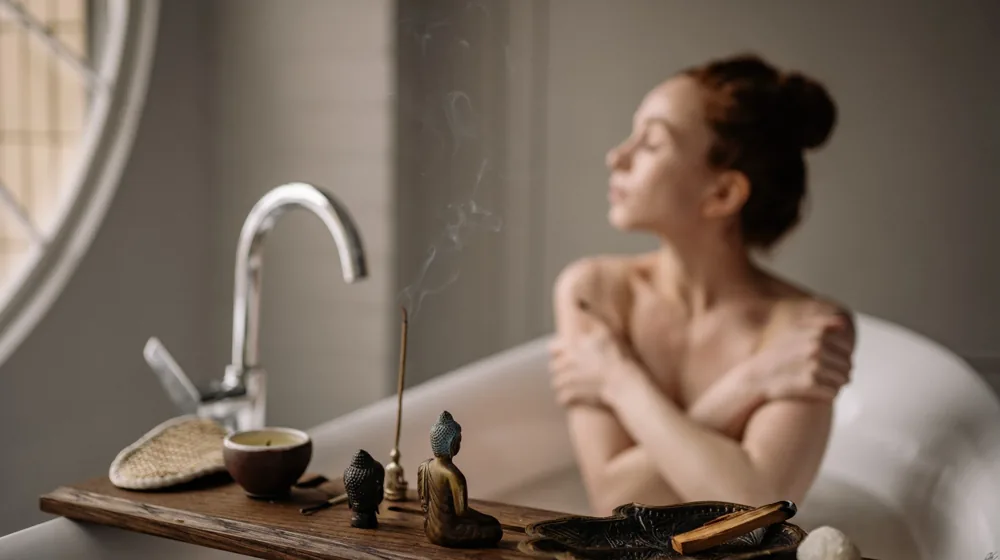

한방 입욕제 초보 가이드: 똑똑하게 고르고 활용하는 핵심 비법
사진: Taryn Elliott / Pexels (무료 이미지, 출처 표기)
한방 입욕제, 복잡하다고 생각하셨나요? 초보자를 위한 쉬운 가이드

따뜻한 물에 몸을 담그고 하루의 피로를 푸는 목욕은 그 자체로 힐링입니다. 여기에 한방 입욕제를 더하면, 몸과 마음에 더욱 깊은 휴식을 선사할 수 있습니다. 하지만 어떤 입욕제를 골라야 할지, 어떻게 사용해야 할지 막막하게 느껴질 수 있습니다.
이 글은 한방 입욕제를 처음 접하는 분들이 안심하고 선택하고 사용할 수 있도록, 필요한 모든 정보를 친절하게 안내합니다. 나에게 맞는 입욕제를 고르는 기준부터 안전하고 효과적으로 즐기는 방법, 그리고 주의사항까지 한 번에 정리해드립니다.
한방 입욕제, 무엇을 기대할 수 있을까요?
한방 입욕제는 오랫동안 우리 조상들이 지혜롭게 활용해 온 자연 요법 중 하나입니다. 따뜻한 물에 한방 재료의 유효 성분이 녹아들면서 다양한 이점을 제공합니다. 주요 효과로는 혈액 순환 개선, 피부 진정 및 보습, 심신 안정 등이 있습니다.
특히 계절의 변화나 스트레스로 인해 몸이 지치고 무겁게 느껴질 때, 한방 입욕제는 편안함을 되찾는 데 도움을 줄 수 있습니다. 특정 성분들은 근육의 긴장을 완화하고 피로 물질을 배출하는 데 기여하기도 합니다.
내게 맞는 한방 입욕제 고르는 기준
시중에 다양한 종류의 한방 입욕제가 나와 있어 선택이 어려울 수 있습니다. 나에게 가장 적합한 입욕제를 고르려면, 주로 어떤 성분으로 이루어져 있는지, 어떤 형태로 판매되는지, 그리고 개인의 건강 상태는 어떠한지 등을 고려하는 것이 중요합니다.
주요 성분별 특징
- 쑥: 혈액 순환을 돕고 몸을 따뜻하게 하며, 피부 진정 효과가 뛰어나 민감성 피부에 좋습니다.
- 생강: 몸을 따뜻하게 데워 냉증 완화에 도움을 주며, 혈액 순환 촉진으로 피로 해소에 좋습니다.
- 유자: 상큼한 향으로 심신 안정에 도움을 주며, 비타민 C가 풍부하여 피부 미용에도 좋습니다.
- 녹차: 항산화 성분이 풍부하여 피부 노화 방지에 도움을 주며, 피부를 맑고 깨끗하게 가꿔줍니다.
- 편백: 피톤치드 성분이 풍부하여 스트레스 완화, 면역력 증진 및 아토피 피부 개선에 효과적입니다.
입욕제 형태별 장단점 비교
한방 입욕제, 안전하고 효과적으로 사용하는 방법
한방 입욕제를 사용할 때는 몇 가지 수칙을 지켜야 더욱 안전하고 효과적인 경험을 할 수 있습니다. 다음 단계를 참고하여 즐거운 입욕 시간을 가져보세요.
- 적정 수온 및 시간 확인: 38~40°C의 미지근한 물에 15~20분 정도 입욕하는 것이 가장 이상적입니다. 너무 뜨거운 물은 피부에 자극을 줄 수 있고, 장시간 입욕은 오히려 피로를 유발할 수 있습니다.
- 입욕제 준비: 티백형은 물에 담가 충분히 우려낸 후 사용하고, 분말형은 물에 잘 풀어줍니다. (2026년 9월 기준) 제품별 권장 사용량을 지켜야 합니다.
- 입욕 중 수분 보충: 따뜻한 물에 몸을 담그면 땀을 많이 흘리게 되므로, 탈수를 예방하기 위해 목욕 전후로 물을 충분히 마시는 것이 좋습니다.
입욕 후 관리 및 주의사항
입욕 후 마무리도 중요합니다. 피부 상태와 건강을 위해 다음 사항들을 유의해주세요.
- 가볍게 샤워하기: 입욕 후 몸에 남아 있는 입욕제 잔여물이 찝찝하거나 민감한 피부라면 가볍게 미지근한 물로 헹궈내는 것이 좋습니다.
- 충분한 보습: 목욕 후에는 피부가 건조해지기 쉬우므로, 보디 로션이나 오일을 사용하여 충분히 보습해주는 것이 중요합니다.
- 특정 대상 주의: 임산부, 영유아, 특정 질환자(고혈압, 심장 질환 등)는 한방 입욕제 사용 전 반드시 의료 전문가와 상담해야 합니다. 특히 아이들이 사용할 경우 성인보다 피부가 민감하므로 소량만 사용하거나 아동용 제품을 선택하는 것이 좋습니다.
- 알레르기 반응 확인: 처음 사용하는 입욕제는 소량으로 팔 안쪽 등에 테스트하여 알레르기 반응이 없는지 확인 후 사용하는 것이 안전합니다.
- 보관법: 습기가 없는 서늘한 곳에 보관하고, 제품에 명시된 유통기한을 지켜 사용해야 합니다.
한방 입욕제, 자주 묻는 질문
한방 입욕제 사용에 대해 궁금해할 만한 몇 가지 질문에 대한 답을 정리했습니다.
Q: 매일 사용해도 괜찮을까요?
A: 피부 자극이 적고 순한 제품이라면 매일 사용해도 큰 무리는 없습니다. 하지만 개인의 피부 타입이나 건강 상태에 따라 주 2~3회 정도 사용하는 것을 권장하며, 몸에 이상을 느끼면 사용 횟수를 줄이거나 중단해야 합니다.
Q: 입욕 후에는 반드시 샤워해야 하나요?
A: 필수는 아닙니다. 하지만 한방 입욕제의 성분이 피부에 오래 남아 자극이 될 수 있거나, 미끈거리는 느낌이 싫다면 가볍게 물로만 헹궈내는 것이 좋습니다. 피부 보습을 위해 샤워 후에는 반드시 보습제를 발라주세요.
Q: 아이들도 한방 입욕제를 사용할 수 있나요?
A: 성인용 한방 입욕제는 아이들에게 강할 수 있으므로 권장하지 않습니다. 어린이 전용으로 출시된 순한 제품을 사용하거나, 소아과 의사와 상담 후 사용하는 것이 안전합니다.
한방 입욕제는 올바른 방법으로 사용하면 몸과 마음의 활력을 되찾는 좋은 습관이 될 수 있습니다. 위에 제시된 정보를 바탕으로 자신에게 맞는 입욕제를 선택하고, 따뜻한 목욕 시간을 통해 건강한 웰니스 라이프를 즐기시길 바랍니다. 정확한 사항은 공식 홈페이지나 해당 기관에서 다시 확인하시길 권장합니다.
🔗 이 글도 함께 보면 좋아요: 내 몸이 원하는 한방 스파: 태양인부터 소음인까지 완벽 가이드
관련 추천 상품
이 포스팅은 쿠팡 파트너스 활동의 일환으로, 이에 따른 일정액의 수수료를 제공받습니다.